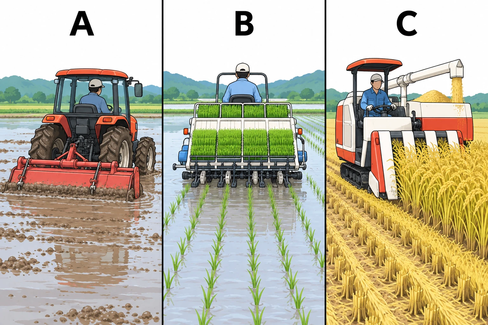
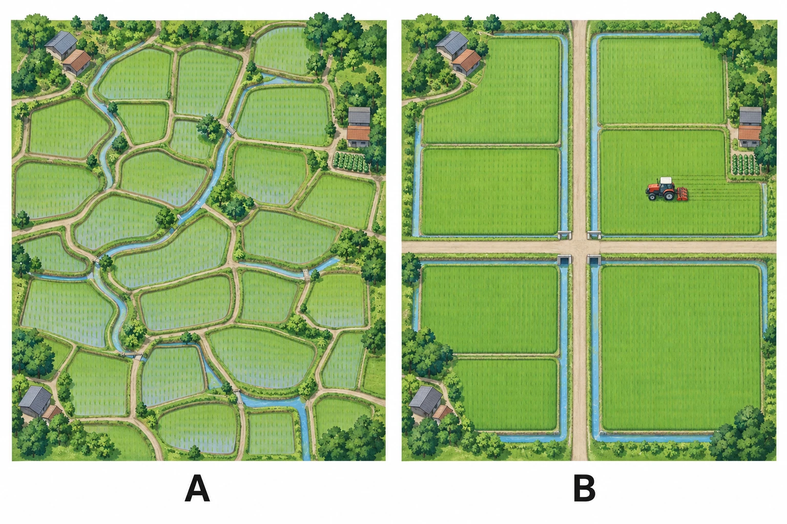
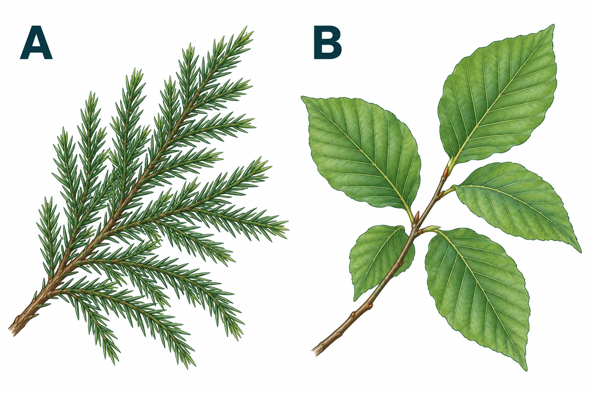
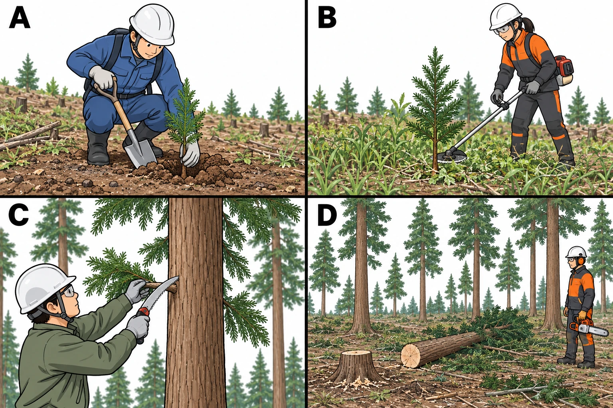
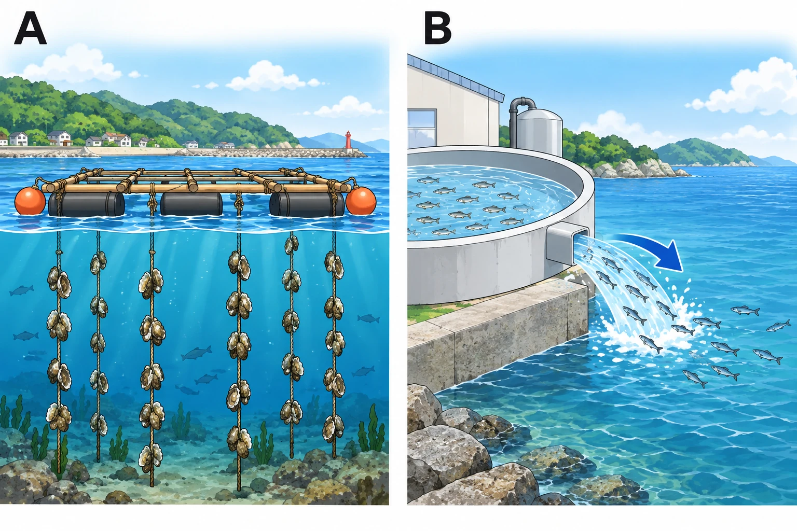
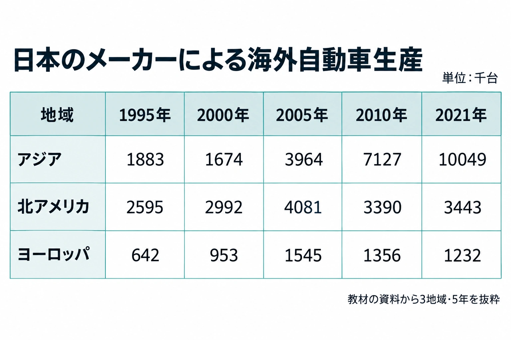
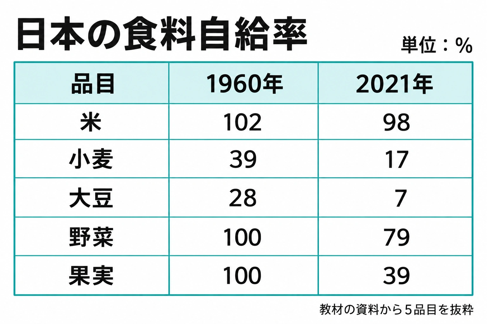

<!doctype html><html lang="ja"><meta charset="utf-8"><title>社会マスター v11.7 図の点検</title><style>body{margin:20px;background:#edf3f7;font-family:system-ui,sans-serif;color:#172d3d}header{display:flex;gap:20px;align-items:center}select{font-size:18px;padding:8px}figure{margin:15px auto;background:white;max-width:1536px}svg,img{width:100%;height:auto;display:block}.hidden{display:none}</style><header><h1>図の点検（19種類）</h1><label>図を選ぶ <select id="audit-asset"><option>bar-data</option><option>line-data</option><option>forest-composition</option><option>power-composition</option><option>crop-import-shares</option><option>farmland-denominators</option><option>farm-population-age</option><option>rice-production-consumption</option><option>internet-income</option><option>internet-age</option><option>meat-virtual-water</option><option>food-consumption-change</option><option>farm-machines</option><option>farm-land</option><option>forest-leaves</option><option>forest-jobs</option><option>fish-methods</option><option>auto-production-table</option><option>food-self-sufficiency-table</option></select></label></header><figure id="bar-data" class=""><svg xmlns="http://www.w3.org/2000/svg" width="1536" height="1024" viewBox="0 0 1536 1024" role="img"><title>読み取り練習用の仮の資料</title><style>text{font-family:system-ui,"Yu Gothic",Meiryo,sans-serif;fill:#172d3d}*{box-sizing:border-box}</style><rect width="1536" height="1024" fill="white"/>
<text x="768" y="78" font-size="50" text-anchor="middle" font-weight="700">読み取り練習用の仮の資料</text>
<line x1="175" y1="770" x2="1425" y2="770" stroke="#dce3e8" stroke-width="1.5" />
<text x="153" y="780" font-size="30" text-anchor="end" font-weight="400">0</text>
<line x1="167" y1="770" x2="175" y2="770" stroke="#293747" stroke-width="2" />
<line x1="175" y1="697.5" x2="1425" y2="697.5" stroke="#dce3e8" stroke-width="1.5" />
<text x="153" y="707.5" font-size="30" text-anchor="end" font-weight="400">5</text>
<line x1="167" y1="697.5" x2="175" y2="697.5" stroke="#293747" stroke-width="2" />
<line x1="175" y1="625" x2="1425" y2="625" stroke="#dce3e8" stroke-width="1.5" />
<text x="153" y="635" font-size="30" text-anchor="end" font-weight="400">10</text>
<line x1="167" y1="625" x2="175" y2="625" stroke="#293747" stroke-width="2" />
<line x1="175" y1="552.5" x2="1425" y2="552.5" stroke="#dce3e8" stroke-width="1.5" />
<text x="153" y="562.5" font-size="30" text-anchor="end" font-weight="400">15</text>
<line x1="167" y1="552.5" x2="175" y2="552.5" stroke="#293747" stroke-width="2" />
<line x1="175" y1="480" x2="1425" y2="480" stroke="#dce3e8" stroke-width="1.5" />
<text x="153" y="490" font-size="30" text-anchor="end" font-weight="400">20</text>
<line x1="167" y1="480" x2="175" y2="480" stroke="#293747" stroke-width="2" />
<line x1="175" y1="407.5" x2="1425" y2="407.5" stroke="#dce3e8" stroke-width="1.5" />
<text x="153" y="417.5" font-size="30" text-anchor="end" font-weight="400">25</text>
<line x1="167" y1="407.5" x2="175" y2="407.5" stroke="#293747" stroke-width="2" />
<line x1="175" y1="335" x2="1425" y2="335" stroke="#dce3e8" stroke-width="1.5" />
<text x="153" y="345" font-size="30" text-anchor="end" font-weight="400">30</text>
<line x1="167" y1="335" x2="175" y2="335" stroke="#293747" stroke-width="2" />
<line x1="175" y1="262.5" x2="1425" y2="262.5" stroke="#dce3e8" stroke-width="1.5" />
<text x="153" y="272.5" font-size="30" text-anchor="end" font-weight="400">35</text>
<line x1="167" y1="262.5" x2="175" y2="262.5" stroke="#293747" stroke-width="2" />
<line x1="175" y1="190" x2="1425" y2="190" stroke="#dce3e8" stroke-width="1.5" />
<text x="153" y="200" font-size="30" text-anchor="end" font-weight="400">40</text>
<line x1="167" y1="190" x2="175" y2="190" stroke="#293747" stroke-width="2" />
<line x1="175" y1="190" x2="175" y2="770" stroke="#293747" stroke-width="2" />
<line x1="175" y1="770" x2="1425" y2="770" stroke="#293747" stroke-width="2" />
<rect x="268.75" y="480" width="229.166667" height="290" fill="#328ad4" data-kind="bar" data-value="20" data-max="40" data-baseline="770" data-scale-height="580"/>
<text x="383.333333" y="464" font-size="34" text-anchor="middle" font-weight="400">20</text>
<text x="383.333333" y="823" font-size="29" text-anchor="middle" font-weight="400">A</text>
<rect x="685.416667" y="262.5" width="229.166667" height="507.5" fill="#328ad4" data-kind="bar" data-value="35" data-max="40" data-baseline="770" data-scale-height="580"/>
<text x="800" y="246.5" font-size="34" text-anchor="middle" font-weight="400">35</text>
<text x="800" y="823" font-size="29" text-anchor="middle" font-weight="400">B</text>
<rect x="1102.083333" y="552.5" width="229.166667" height="217.5" fill="#328ad4" data-kind="bar" data-value="15" data-max="40" data-baseline="770" data-scale-height="580"/>
<text x="1216.666667" y="536.5" font-size="34" text-anchor="middle" font-weight="400">15</text>
<text x="1216.666667" y="823" font-size="29" text-anchor="middle" font-weight="400">C</text>
</svg>
</figure><figure id="line-data" class="hidden"><svg xmlns="http://www.w3.org/2000/svg" width="1536" height="1024" viewBox="0 0 1536 1024" role="img"><title>読み取り練習用の仮の資料</title><style>text{font-family:system-ui,"Yu Gothic",Meiryo,sans-serif;fill:#172d3d}*{box-sizing:border-box}</style><rect width="1536" height="1024" fill="white"/>
<text x="768" y="78" font-size="50" text-anchor="middle" font-weight="700">読み取り練習用の仮の資料</text>
<line x1="185" y1="820" x2="1405" y2="820" stroke="#dce3e8" stroke-width="1.5" />
<text x="163" y="830" font-size="30" text-anchor="end" font-weight="400">0</text>
<line x1="177" y1="820" x2="185" y2="820" stroke="#293747" stroke-width="2" />
<line x1="185" y1="731.428571" x2="1405" y2="731.428571" stroke="#dce3e8" stroke-width="1.5" />
<text x="163" y="741.428571" font-size="30" text-anchor="end" font-weight="400">5</text>
<line x1="177" y1="731.428571" x2="185" y2="731.428571" stroke="#293747" stroke-width="2" />
<line x1="185" y1="642.857143" x2="1405" y2="642.857143" stroke="#dce3e8" stroke-width="1.5" />
<text x="163" y="652.857143" font-size="30" text-anchor="end" font-weight="400">10</text>
<line x1="177" y1="642.857143" x2="185" y2="642.857143" stroke="#293747" stroke-width="2" />
<line x1="185" y1="554.285714" x2="1405" y2="554.285714" stroke="#dce3e8" stroke-width="1.5" />
<text x="163" y="564.285714" font-size="30" text-anchor="end" font-weight="400">15</text>
<line x1="177" y1="554.285714" x2="185" y2="554.285714" stroke="#293747" stroke-width="2" />
<line x1="185" y1="465.714286" x2="1405" y2="465.714286" stroke="#dce3e8" stroke-width="1.5" />
<text x="163" y="475.714286" font-size="30" text-anchor="end" font-weight="400">20</text>
<line x1="177" y1="465.714286" x2="185" y2="465.714286" stroke="#293747" stroke-width="2" />
<line x1="185" y1="377.142857" x2="1405" y2="377.142857" stroke="#dce3e8" stroke-width="1.5" />
<text x="163" y="387.142857" font-size="30" text-anchor="end" font-weight="400">25</text>
<line x1="177" y1="377.142857" x2="185" y2="377.142857" stroke="#293747" stroke-width="2" />
<line x1="185" y1="288.571429" x2="1405" y2="288.571429" stroke="#dce3e8" stroke-width="1.5" />
<text x="163" y="298.571429" font-size="30" text-anchor="end" font-weight="400">30</text>
<line x1="177" y1="288.571429" x2="185" y2="288.571429" stroke="#293747" stroke-width="2" />
<line x1="185" y1="200" x2="1405" y2="200" stroke="#dce3e8" stroke-width="1.5" />
<text x="163" y="210" font-size="30" text-anchor="end" font-weight="400">35</text>
<line x1="177" y1="200" x2="185" y2="200" stroke="#293747" stroke-width="2" />
<line x1="185" y1="200" x2="185" y2="820" stroke="#293747" stroke-width="2" />
<line x1="185" y1="820" x2="1405" y2="820" stroke="#293747" stroke-width="2" />
<polyline points="185,642.857143 591.666667,465.714286 998.333333,554.285714 1405,288.571429" fill="none" stroke="#079c97" stroke-width="6" data-kind="practice-line"/>
<circle cx="185" cy="642.857143" r="9" fill="#079c97"/>
<text x="185" y="618.857143" font-size="35" text-anchor="middle" font-weight="400">10</text>
<line x1="185" y1="820" x2="185" y2="835" stroke="#293747" stroke-width="2" />
<text x="185" y="890" font-size="34" text-anchor="middle" font-weight="400">2020年</text>
<circle cx="591.666667" cy="465.714286" r="9" fill="#079c97"/>
<text x="591.666667" y="441.714286" font-size="35" text-anchor="middle" font-weight="400">20</text>
<line x1="591.666667" y1="820" x2="591.666667" y2="835" stroke="#293747" stroke-width="2" />
<text x="591.666667" y="890" font-size="34" text-anchor="middle" font-weight="400">2021年</text>
<circle cx="998.333333" cy="554.285714" r="9" fill="#079c97"/>
<text x="998.333333" y="530.285714" font-size="35" text-anchor="middle" font-weight="400">15</text>
<line x1="998.333333" y1="820" x2="998.333333" y2="835" stroke="#293747" stroke-width="2" />
<text x="998.333333" y="890" font-size="34" text-anchor="middle" font-weight="400">2022年</text>
<circle cx="1405" cy="288.571429" r="9" fill="#079c97"/>
<text x="1405" y="264.571429" font-size="35" text-anchor="middle" font-weight="400">30</text>
<line x1="1405" y1="820" x2="1405" y2="835" stroke="#293747" stroke-width="2" />
<text x="1405" y="890" font-size="34" text-anchor="middle" font-weight="400">2023年</text>
</svg>
</figure><figure id="forest-composition" class="hidden"><svg xmlns="http://www.w3.org/2000/svg" width="1536" height="1024" viewBox="0 0 1536 1024" role="img"><title>日本の森林の構成（2017年）</title><style>text{font-family:system-ui,"Yu Gothic",Meiryo,sans-serif;fill:#172d3d}*{box-sizing:border-box}</style><rect width="1536" height="1024" fill="white"/>
<text x="768" y="78" font-size="50" text-anchor="middle" font-weight="700">日本の森林の構成（2017年）</text>
<path d="M 768 480 L 768 195 A 285 285 0 0 1 949.665837 699.596274 Z" fill="#079c97" data-kind="sector" data-value="39" data-start-angle="-90" data-end-angle="50.4"/>
<path d="M 768 480 L 949.665837 699.596274 A 285 285 0 0 1 803.719972 762.75269 Z" fill="#ed8d34" data-kind="sector" data-value="9" data-start-angle="50.4" data-end-angle="82.8"/>
<path d="M 768 480 L 803.719972 762.75269 A 285 285 0 0 1 785.895298 764.437618 Z" fill="#328ad4" data-kind="sector" data-value="1" data-start-angle="82.8" data-end-angle="86.4"/>
<path d="M 768 480 L 785.895298 764.437618 A 285 285 0 0 1 663.084502 215.013702 Z" fill="#f1c64f" data-kind="sector" data-value="45" data-start-angle="86.4" data-end-angle="248.4"/>
<path d="M 768 480 L 663.084502 215.013702 A 285 285 0 0 1 768 195 Z" fill="#9873bf" data-kind="sector" data-value="6" data-start-angle="248.4" data-end-angle="270"/>
<polyline points="1024.86045,387.524548 1075,302 1090,302" fill="none" stroke="#44515d" stroke-width="2.5"/>
<circle cx="1024.86045" cy="387.524548" r="4" fill="#44515d"/>
<text x="1105" y="275" font-size="34" text-anchor="start" font-weight="400">針葉樹の人工林</text>
<text x="1105" y="322" font-size="34" text-anchor="start" font-weight="400">39%</text>
<polyline points="876.421374,730.547013 1060,746 1080,746" fill="none" stroke="#44515d" stroke-width="2.5"/>
<circle cx="876.421374" cy="730.547013" r="4" fill="#44515d"/>
<text x="1100" y="718" font-size="34" text-anchor="start" font-weight="400">針葉樹の天然林</text>
<text x="1100" y="765" font-size="34" text-anchor="start" font-weight="400">9%</text>
<polyline points="793.69157,751.788416 820,830 945,830" fill="none" stroke="#44515d" stroke-width="2.5"/>
<circle cx="793.69157" cy="751.788416" r="4" fill="#44515d"/>
<text x="965" y="850" font-size="34" text-anchor="start" font-weight="400">広葉樹の人工林</text>
<text x="965" y="897" font-size="34" text-anchor="start" font-weight="400">1%</text>
<polyline points="501.574724,539.553105 432,490 395,490" fill="none" stroke="#44515d" stroke-width="2.5"/>
<circle cx="501.574724" cy="539.553105" r="4" fill="#44515d"/>
<text x="78" y="463" font-size="34" text-anchor="start" font-weight="400">広葉樹の天然林</text>
<text x="78" y="510" font-size="34" text-anchor="start" font-weight="400">45%</text>
<polyline points="716.844901,211.835581 600,185 465,185" fill="none" stroke="#44515d" stroke-width="2.5"/>
<circle cx="716.844901" cy="211.835581" r="4" fill="#44515d"/>
<text x="240" y="175" font-size="34" text-anchor="start" font-weight="400">その他</text>
<text x="240" y="222" font-size="34" text-anchor="start" font-weight="400">6%</text>
<text x="768" y="975" font-size="26" text-anchor="middle" font-weight="400">日本の森林面積を100%とする</text>
</svg>
</figure><figure id="power-composition" class="hidden"><svg xmlns="http://www.w3.org/2000/svg" width="1536" height="1024" viewBox="0 0 1536 1024" role="img"><title>発電のエネルギー源の変化</title><style>text{font-family:system-ui,"Yu Gothic",Meiryo,sans-serif;fill:#172d3d}*{box-sizing:border-box}</style><rect width="1536" height="1024" fill="white"/>
<text x="768" y="78" font-size="50" text-anchor="middle" font-weight="700">発電のエネルギー源の変化</text>
<rect x="280" y="145" width="36" height="28" fill="#328ad4" />
<text x="330" y="173" font-size="30" text-anchor="start" font-weight="400">水力</text>
<rect x="555" y="145" width="36" height="28" fill="#ed8d34" />
<text x="605" y="173" font-size="30" text-anchor="start" font-weight="400">火力</text>
<rect x="830" y="145" width="36" height="28" fill="#65ac4b" />
<text x="880" y="173" font-size="30" text-anchor="start" font-weight="400">原子力</text>
<rect x="1105" y="145" width="36" height="28" fill="#f1c64f" />
<text x="1155" y="173" font-size="30" text-anchor="start" font-weight="400">新エネルギー</text>
<text x="190" y="357" font-size="35" text-anchor="end" font-weight="600">1950年</text>
<rect x="220" y="290" width="972.23" height="105" fill="#328ad4" data-kind="segment" data-row="0" data-value="81.7" data-total-width="1190" data-category="水力"/>
<text x="706.115" y="354.5" font-size="34" text-anchor="middle" font-weight="400">81.7%</text>
<rect x="1192.23" y="290" width="217.77" height="105" fill="#ed8d34" data-kind="segment" data-row="0" data-value="18.3" data-total-width="1190" data-category="火力"/>
<text x="1301.115" y="354.5" font-size="34" text-anchor="middle" font-weight="400">18.3%</text>
<text x="190" y="567" font-size="35" text-anchor="end" font-weight="600">2000年</text>
<rect x="220" y="500" width="105.91" height="105" fill="#328ad4" data-kind="segment" data-row="1" data-value="8.9" data-total-width="1190" data-category="水力"/>
<text x="272.955" y="564.5" font-size="34" text-anchor="middle" font-weight="400">8.9%</text>
<rect x="325.91" y="500" width="729.47" height="105" fill="#ed8d34" data-kind="segment" data-row="1" data-value="61.3" data-total-width="1190" data-category="火力"/>
<text x="690.645" y="564.5" font-size="34" text-anchor="middle" font-weight="400">61.3%</text>
<rect x="1055.38" y="500" width="351.05" height="105" fill="#65ac4b" data-kind="segment" data-row="1" data-value="29.5" data-total-width="1190" data-category="原子力"/>
<text x="1230.905" y="564.5" font-size="34" text-anchor="middle" font-weight="400">29.5%</text>
<rect x="1406.43" y="500" width="3.57" height="105" fill="#f1c64f" data-kind="segment" data-row="1" data-value="0.3" data-total-width="1190" data-category="新エネルギー"/>
<text x="190" y="777" font-size="35" text-anchor="end" font-weight="600">2020年</text>
<rect x="220" y="710" width="108.29" height="105" fill="#328ad4" data-kind="segment" data-row="2" data-value="9.1" data-total-width="1190" data-category="水力"/>
<text x="274.145" y="774.5" font-size="34" text-anchor="middle" font-weight="400">9.1%</text>
<rect x="328.29" y="710" width="990.08" height="105" fill="#ed8d34" data-kind="segment" data-row="2" data-value="83.2" data-total-width="1190" data-category="火力"/>
<text x="823.33" y="774.5" font-size="34" text-anchor="middle" font-weight="400">83.2%</text>
<rect x="1318.37" y="710" width="46.41" height="105" fill="#65ac4b" data-kind="segment" data-row="2" data-value="3.9" data-total-width="1190" data-category="原子力"/>
<rect x="1364.78" y="710" width="45.22" height="105" fill="#f1c64f" data-kind="segment" data-row="2" data-value="3.8" data-total-width="1190" data-category="新エネルギー"/>
<polyline points="1408.2,552 1440,475" fill="none" stroke="#44515d" stroke-width="2.5"/>
<circle cx="1408.2" cy="552" r="4" fill="#44515d"/>
<text x="1450" y="453" font-size="30" text-anchor="middle" font-weight="400">0.3%</text>
<polyline points="1341.575,742 1290,671" fill="none" stroke="#44515d" stroke-width="2.5"/>
<circle cx="1341.575" cy="742" r="4" fill="#44515d"/>
<text x="1270" y="650" font-size="30" text-anchor="middle" font-weight="400">3.9%</text>
<polyline points="1387.39,742 1453,671" fill="none" stroke="#44515d" stroke-width="2.5"/>
<circle cx="1387.39" cy="742" r="4" fill="#44515d"/>
<text x="1460" y="650" font-size="30" text-anchor="middle" font-weight="400">3.8%</text>
<line x1="220" y1="857" x2="1410" y2="857" stroke="#293747" stroke-width="2" />
<line x1="220" y1="857" x2="220" y2="871" stroke="#293747" stroke-width="2" />
<text x="220" y="908" font-size="30" text-anchor="middle" font-weight="400">0%</text>
<line x1="458" y1="857" x2="458" y2="871" stroke="#293747" stroke-width="2" />
<text x="458" y="908" font-size="30" text-anchor="middle" font-weight="400">20%</text>
<line x1="696" y1="857" x2="696" y2="871" stroke="#293747" stroke-width="2" />
<text x="696" y="908" font-size="30" text-anchor="middle" font-weight="400">40%</text>
<line x1="934" y1="857" x2="934" y2="871" stroke="#293747" stroke-width="2" />
<text x="934" y="908" font-size="30" text-anchor="middle" font-weight="400">60%</text>
<line x1="1172" y1="857" x2="1172" y2="871" stroke="#293747" stroke-width="2" />
<text x="1172" y="908" font-size="30" text-anchor="middle" font-weight="400">80%</text>
<line x1="1410" y1="857" x2="1410" y2="871" stroke="#293747" stroke-width="2" />
<text x="1410" y="908" font-size="30" text-anchor="middle" font-weight="400">100%</text>
<text x="768" y="975" font-size="26" text-anchor="middle" font-weight="400">新エネルギーは教材の分類。各年の発電量全体を100%とする</text>
</svg>
</figure><figure id="crop-import-shares" class="hidden"><svg xmlns="http://www.w3.org/2000/svg" width="1536" height="1024" viewBox="0 0 1536 1024" role="img"><title>小麦・大豆・とうもろこしの輸入先</title><style>text{font-family:system-ui,"Yu Gothic",Meiryo,sans-serif;fill:#172d3d}*{box-sizing:border-box}</style><rect width="1536" height="1024" fill="white"/>
<text x="768" y="78" font-size="50" text-anchor="middle" font-weight="700">小麦・大豆・とうもろこしの輸入先</text>
<rect x="70" y="127" width="36" height="28" fill="#079c97" />
<text x="120" y="155" font-size="30" text-anchor="start" font-weight="400">アメリカ合衆国</text>
<rect x="455" y="127" width="36" height="28" fill="#328ad4" />
<text x="505" y="155" font-size="30" text-anchor="start" font-weight="400">カナダ</text>
<rect x="705" y="127" width="36" height="28" fill="#ed8d34" />
<text x="755" y="155" font-size="30" text-anchor="start" font-weight="400">オーストラリア</text>
<rect x="70" y="177" width="36" height="28" fill="#f1c64f" />
<text x="120" y="205" font-size="30" text-anchor="start" font-weight="400">ブラジル</text>
<rect x="455" y="177" width="36" height="28" fill="#9873bf" />
<text x="505" y="205" font-size="30" text-anchor="start" font-weight="400">アルゼンチン</text>
<rect x="705" y="177" width="36" height="28" fill="#c4c9ce" />
<text x="755" y="205" font-size="30" text-anchor="start" font-weight="400">その他</text>
<text x="232" y="353" font-size="32" text-anchor="end" font-weight="600">小麦</text>
<rect x="260" y="290" width="503.88" height="98" fill="#079c97" data-kind="segment" data-row="0" data-value="44.2" data-total-width="1140" data-category="アメリカ合衆国"/>
<rect x="763.88" y="290" width="400.14" height="98" fill="#328ad4" data-kind="segment" data-row="0" data-value="35.1" data-total-width="1140" data-category="カナダ"/>
<rect x="1164.02" y="290" width="234.84" height="98" fill="#ed8d34" data-kind="segment" data-row="0" data-value="20.6" data-total-width="1140" data-category="オーストラリア"/>
<rect x="1398.86" y="290" width="1.14" height="98" fill="#c4c9ce" data-kind="segment" data-row="0" data-value="0.1" data-total-width="1140" data-category="その他"/>
<text x="511.94" y="352" font-size="32" text-anchor="middle" font-weight="400">44.2%</text>
<text x="963.95" y="352" font-size="32" text-anchor="middle" font-weight="400">35.1%</text>
<text x="1281.44" y="352" font-size="32" text-anchor="middle" font-weight="400">20.6%</text>
<polyline points="1399.43,360 1440,420" fill="none" stroke="#44515d" stroke-width="2.5"/>
<circle cx="1399.43" cy="360" r="4" fill="#44515d"/>
<text x="1440" y="455" font-size="29" text-anchor="middle" font-weight="400">0.1%</text>
<text x="232" y="553" font-size="32" text-anchor="end" font-weight="600">大豆</text>
<rect x="260" y="490" width="865.26" height="98" fill="#079c97" data-kind="segment" data-row="1" data-value="75.9" data-total-width="1140" data-category="アメリカ合衆国"/>
<rect x="1125.26" y="490" width="172.14" height="98" fill="#f1c64f" data-kind="segment" data-row="1" data-value="15.1" data-total-width="1140" data-category="ブラジル"/>
<rect x="1297.4" y="490" width="94.62" height="98" fill="#328ad4" data-kind="segment" data-row="1" data-value="8.3" data-total-width="1140" data-category="カナダ"/>
<rect x="1392.02" y="490" width="7.98" height="98" fill="#c4c9ce" data-kind="segment" data-row="1" data-value="0.7" data-total-width="1140" data-category="その他"/>
<text x="692.63" y="552" font-size="32" text-anchor="middle" font-weight="400">75.9%</text>
<text x="1211.33" y="552" font-size="32" text-anchor="middle" font-weight="400">15.1%</text>
<text x="1344.71" y="552" font-size="32" text-anchor="middle" font-weight="400">8.3%</text>
<polyline points="1396.01,560 1440,620" fill="none" stroke="#44515d" stroke-width="2.5"/>
<circle cx="1396.01" cy="560" r="4" fill="#44515d"/>
<text x="1440" y="655" font-size="29" text-anchor="middle" font-weight="400">0.7%</text>
<text x="232" y="753" font-size="32" text-anchor="end" font-weight="600">とうもろこし</text>
<rect x="260" y="690" width="829.92" height="98" fill="#079c97" data-kind="segment" data-row="2" data-value="72.8" data-total-width="1140" data-category="アメリカ合衆国"/>
<rect x="1089.92" y="690" width="175.56" height="98" fill="#f1c64f" data-kind="segment" data-row="2" data-value="15.4" data-total-width="1140" data-category="ブラジル"/>
<rect x="1265.48" y="690" width="83.22" height="98" fill="#9873bf" data-kind="segment" data-row="2" data-value="7.3" data-total-width="1140" data-category="アルゼンチン"/>
<rect x="1348.7" y="690" width="51.3" height="98" fill="#c4c9ce" data-kind="segment" data-row="2" data-value="4.5" data-total-width="1140" data-category="その他"/>
<text x="674.96" y="752" font-size="32" text-anchor="middle" font-weight="400">72.8%</text>
<text x="1177.7" y="752" font-size="32" text-anchor="middle" font-weight="400">15.4%</text>
<text x="1307.09" y="752" font-size="32" text-anchor="middle" font-weight="400">7.3%</text>
<polyline points="1374.35,760 1440,820" fill="none" stroke="#44515d" stroke-width="2.5"/>
<circle cx="1374.35" cy="760" r="4" fill="#44515d"/>
<text x="1440" y="855" font-size="29" text-anchor="middle" font-weight="400">4.5%</text>
<line x1="260" y1="866" x2="1400" y2="866" stroke="#293747" stroke-width="2" />
<line x1="260" y1="866" x2="260" y2="880" stroke="#293747" stroke-width="2" />
<text x="260" y="917" font-size="30" text-anchor="middle" font-weight="400">0%</text>
<line x1="488" y1="866" x2="488" y2="880" stroke="#293747" stroke-width="2" />
<text x="488" y="917" font-size="30" text-anchor="middle" font-weight="400">20%</text>
<line x1="716" y1="866" x2="716" y2="880" stroke="#293747" stroke-width="2" />
<text x="716" y="917" font-size="30" text-anchor="middle" font-weight="400">40%</text>
<line x1="944" y1="866" x2="944" y2="880" stroke="#293747" stroke-width="2" />
<text x="944" y="917" font-size="30" text-anchor="middle" font-weight="400">60%</text>
<line x1="1172" y1="866" x2="1172" y2="880" stroke="#293747" stroke-width="2" />
<text x="1172" y="917" font-size="30" text-anchor="middle" font-weight="400">80%</text>
<line x1="1400" y1="866" x2="1400" y2="880" stroke="#293747" stroke-width="2" />
<text x="1400" y="917" font-size="30" text-anchor="middle" font-weight="400">100%</text>
<text x="768" y="975" font-size="26" text-anchor="middle" font-weight="400">教材掲載の2023年版資料。各作物の輸入量を100%とする</text>
</svg>
</figure><figure id="farmland-denominators" class="hidden"><svg xmlns="http://www.w3.org/2000/svg" width="1536" height="1024" viewBox="0 0 1536 1024" role="img"><title>日本の国土と耕地面積の割合</title><style>text{font-family:system-ui,"Yu Gothic",Meiryo,sans-serif;fill:#172d3d}*{box-sizing:border-box}</style><rect width="1536" height="1024" fill="white"/>
<text x="768" y="78" font-size="50" text-anchor="middle" font-weight="700">日本の国土と耕地面積の割合</text>
<text x="180" y="223" font-size="36" text-anchor="start" font-weight="600">国土全体を100%とする</text>
<rect x="180" y="280" width="144" height="105" fill="#079c97" data-kind="segment" data-row="0" data-value="12" data-total-width="1200" data-category="耕地"/>
<rect x="324" y="280" width="1056" height="105" fill="#c4c9ce" data-kind="segment" data-row="0" data-value="88" data-total-width="1200" data-category="森林・住宅地・川など"/>
<text x="252" y="320" font-size="30" text-anchor="middle" font-weight="400">耕地</text>
<text x="252" y="366" font-size="30" text-anchor="middle" font-weight="400">12%</text>
<text x="852" y="320" font-size="34" text-anchor="middle" font-weight="400">森林・住宅地・川など</text>
<text x="852" y="370" font-size="34" text-anchor="middle" font-weight="400">88%</text>
<line x1="180" y1="385" x2="180" y2="660" stroke="#6b7780" stroke-width="2.5" stroke-dasharray="10 8" data-guide="left"/>
<line x1="324" y1="385" x2="1380" y2="660" stroke="#6b7780" stroke-width="2.5" stroke-dasharray="10 8" data-guide="right"/>
<text x="220" y="580" font-size="36" text-anchor="start" font-weight="600">耕地全体を100%とする</text>
<rect x="180" y="660" width="648" height="105" fill="#079c97" data-kind="segment" data-row="1" data-value="54" data-total-width="1200" data-category="田"/>
<rect x="828" y="660" width="312" height="105" fill="#328ad4" data-kind="segment" data-row="1" data-value="26" data-total-width="1200" data-category="畑"/>
<rect x="1140" y="660" width="72" height="105" fill="#f1c64f" data-kind="segment" data-row="1" data-value="6" data-total-width="1200" data-category="果樹園・茶畑など"/>
<rect x="1212" y="660" width="168" height="105" fill="#65ac4b" data-kind="segment" data-row="1" data-value="14" data-total-width="1200" data-category="牧草地"/>
<text x="504" y="701" font-size="36" text-anchor="middle" font-weight="400">田</text>
<text x="504" y="753" font-size="36" text-anchor="middle" font-weight="400">54%</text>
<text x="984" y="701" font-size="36" text-anchor="middle" font-weight="400">畑</text>
<text x="984" y="753" font-size="36" text-anchor="middle" font-weight="400">26%</text>
<text x="1296" y="701" font-size="31" text-anchor="middle" font-weight="400">牧草地</text>
<text x="1296" y="750" font-size="31" text-anchor="middle" font-weight="400">14%</text>
<polyline points="1176,735 1176,825" fill="none" stroke="#44515d" stroke-width="2.5"/>
<circle cx="1176" cy="735" r="4" fill="#44515d"/>
<text x="1176" y="867" font-size="30" text-anchor="middle" font-weight="400">果樹園・茶畑など</text>
<text x="1176" y="913" font-size="30" text-anchor="middle" font-weight="400">6%</text>
<text x="180" y="265" font-size="28" text-anchor="middle" font-weight="400">0%</text>
<text x="1380" y="265" font-size="28" text-anchor="middle" font-weight="400">100%</text>
<text x="180" y="813" font-size="28" text-anchor="middle" font-weight="400">0%</text>
<text x="1380" y="813" font-size="28" text-anchor="middle" font-weight="400">100%</text>
</svg>
</figure><figure id="farm-population-age" class="hidden"><svg xmlns="http://www.w3.org/2000/svg" width="1536" height="1024" viewBox="0 0 1536 1024" role="img"><title>農業の働き手の変化</title><style>text{font-family:system-ui,"Yu Gothic",Meiryo,sans-serif;fill:#172d3d}*{box-sizing:border-box}</style><rect width="1536" height="1024" fill="white"/>
<text x="768" y="78" font-size="50" text-anchor="middle" font-weight="700">農業の働き手の変化</text>
<line x1="210" y1="815" x2="1310" y2="815" stroke="#dce3e8" stroke-width="1.5" />
<text x="188" y="825" font-size="30" text-anchor="end" font-weight="400">0</text>
<line x1="202" y1="815" x2="210" y2="815" stroke="#293747" stroke-width="2" />
<line x1="210" y1="704" x2="1310" y2="704" stroke="#dce3e8" stroke-width="1.5" />
<text x="188" y="714" font-size="30" text-anchor="end" font-weight="400">100</text>
<line x1="202" y1="704" x2="210" y2="704" stroke="#293747" stroke-width="2" />
<line x1="210" y1="593" x2="1310" y2="593" stroke="#dce3e8" stroke-width="1.5" />
<text x="188" y="603" font-size="30" text-anchor="end" font-weight="400">200</text>
<line x1="202" y1="593" x2="210" y2="593" stroke="#293747" stroke-width="2" />
<line x1="210" y1="482" x2="1310" y2="482" stroke="#dce3e8" stroke-width="1.5" />
<text x="188" y="492" font-size="30" text-anchor="end" font-weight="400">300</text>
<line x1="202" y1="482" x2="210" y2="482" stroke="#293747" stroke-width="2" />
<line x1="210" y1="371" x2="1310" y2="371" stroke="#dce3e8" stroke-width="1.5" />
<text x="188" y="381" font-size="30" text-anchor="end" font-weight="400">400</text>
<line x1="202" y1="371" x2="210" y2="371" stroke="#293747" stroke-width="2" />
<line x1="210" y1="260" x2="1310" y2="260" stroke="#dce3e8" stroke-width="1.5" />
<text x="188" y="270" font-size="30" text-anchor="end" font-weight="400">500</text>
<line x1="202" y1="260" x2="210" y2="260" stroke="#293747" stroke-width="2" />
<line x1="210" y1="260" x2="210" y2="815" stroke="#293747" stroke-width="2" />
<line x1="210" y1="815" x2="1310" y2="815" stroke="#293747" stroke-width="2" />
<text x="55" y="537.5" transform="rotate(-90 55 537.5)" font-size="30" text-anchor="middle">農業就業人口（万人）</text>
<text x="1310" y="230" font-size="30" text-anchor="end" font-weight="400">割合（%）</text>
<line x1="1310" y1="260" x2="1310" y2="815" stroke="#293747" stroke-width="2" />
<line x1="1310" y1="815" x2="1318" y2="815" stroke="#293747" stroke-width="2" />
<text x="1332" y="825" font-size="29" text-anchor="start" font-weight="400">0</text>
<line x1="1310" y1="745.625" x2="1318" y2="745.625" stroke="#293747" stroke-width="2" />
<text x="1332" y="755.625" font-size="29" text-anchor="start" font-weight="400">10</text>
<line x1="1310" y1="676.25" x2="1318" y2="676.25" stroke="#293747" stroke-width="2" />
<text x="1332" y="686.25" font-size="29" text-anchor="start" font-weight="400">20</text>
<line x1="1310" y1="606.875" x2="1318" y2="606.875" stroke="#293747" stroke-width="2" />
<text x="1332" y="616.875" font-size="29" text-anchor="start" font-weight="400">30</text>
<line x1="1310" y1="537.5" x2="1318" y2="537.5" stroke="#293747" stroke-width="2" />
<text x="1332" y="547.5" font-size="29" text-anchor="start" font-weight="400">40</text>
<line x1="1310" y1="468.125" x2="1318" y2="468.125" stroke="#293747" stroke-width="2" />
<text x="1332" y="478.125" font-size="29" text-anchor="start" font-weight="400">50</text>
<line x1="1310" y1="398.75" x2="1318" y2="398.75" stroke="#293747" stroke-width="2" />
<text x="1332" y="408.75" font-size="29" text-anchor="start" font-weight="400">60</text>
<line x1="1310" y1="329.375" x2="1318" y2="329.375" stroke="#293747" stroke-width="2" />
<text x="1332" y="339.375" font-size="29" text-anchor="start" font-weight="400">70</text>
<line x1="1310" y1="260" x2="1318" y2="260" stroke="#293747" stroke-width="2" />
<text x="1332" y="270" font-size="29" text-anchor="start" font-weight="400">80</text>
<rect x="265" y="279.98" width="110" height="535.02" fill="#079c97" data-kind="bar" data-value="482" data-max="500" data-baseline="815" data-scale-height="555"/>
<text x="320" y="261.98" font-size="36" text-anchor="middle" font-weight="600">482</text>
<text x="320" y="866" font-size="30" text-anchor="middle" font-weight="400">1990年</text>
<rect x="568.448276" y="383.21" width="110" height="431.79" fill="#079c97" data-kind="bar" data-value="389" data-max="500" data-baseline="815" data-scale-height="555"/>
<text x="623.448276" y="365.21" font-size="36" text-anchor="middle" font-weight="600">389</text>
<text x="623.448276" y="866" font-size="30" text-anchor="middle" font-weight="400">2000年</text>
<rect x="871.896552" y="525.29" width="110" height="289.71" fill="#079c97" data-kind="bar" data-value="261" data-max="500" data-baseline="815" data-scale-height="555"/>
<text x="926.896552" y="507.29" font-size="36" text-anchor="middle" font-weight="600">261</text>
<text x="926.896552" y="866" font-size="30" text-anchor="middle" font-weight="400">2010年</text>
<rect x="1145" y="628.52" width="110" height="186.48" fill="#079c97" data-kind="bar" data-value="168" data-max="500" data-baseline="815" data-scale-height="555"/>
<text x="1200" y="610.52" font-size="36" text-anchor="middle" font-weight="600">168</text>
<text x="1200" y="866" font-size="30" text-anchor="middle" font-weight="400">2019年</text>
<polyline points="320,586.0625 623.448276,447.3125 926.896552,391.8125 1200,329.375" fill="none" stroke="#ed8d34" stroke-width="6" data-kind="percentage-line"/>
<circle cx="320" cy="586.0625" r="7" fill="#ed8d34"/>
<circle cx="623.448276" cy="447.3125" r="7" fill="#ed8d34"/>
<circle cx="926.896552" cy="391.8125" r="7" fill="#ed8d34"/>
<circle cx="1200" cy="329.375" r="7" fill="#ed8d34"/>
<rect x="245" y="117" width="36" height="28" fill="#079c97" />
<text x="295" y="145" font-size="30" text-anchor="start" font-weight="400">農業就業人口</text>
<rect x="245" y="167" width="36" height="28" fill="#ed8d34" />
<text x="295" y="195" font-size="30" text-anchor="start" font-weight="400">農業人口に占める65歳以上の割合</text>
<text x="768" y="975" font-size="26" text-anchor="middle" font-weight="400">教材のグラフを再構成。割合の線は概数</text>
</svg>
</figure><figure id="rice-production-consumption" class="hidden"><svg xmlns="http://www.w3.org/2000/svg" width="1536" height="1024" viewBox="0 0 1536 1024" role="img"><title>米の生産量と消費量</title><style>text{font-family:system-ui,"Yu Gothic",Meiryo,sans-serif;fill:#172d3d}*{box-sizing:border-box}</style><rect width="1536" height="1024" fill="white"/>
<text x="768" y="78" font-size="50" text-anchor="middle" font-weight="700">米の生産量と消費量</text>
<line x1="185" y1="795" x2="1415" y2="795" stroke="#dce3e8" stroke-width="1.5" />
<text x="163" y="805" font-size="30" text-anchor="end" font-weight="400">800</text>
<line x1="177" y1="795" x2="185" y2="795" stroke="#293747" stroke-width="2" />
<line x1="185" y1="711.428571" x2="1415" y2="711.428571" stroke="#dce3e8" stroke-width="1.5" />
<text x="163" y="721.428571" font-size="30" text-anchor="end" font-weight="400">900</text>
<line x1="177" y1="711.428571" x2="185" y2="711.428571" stroke="#293747" stroke-width="2" />
<line x1="185" y1="627.857143" x2="1415" y2="627.857143" stroke="#dce3e8" stroke-width="1.5" />
<text x="163" y="637.857143" font-size="30" text-anchor="end" font-weight="400">1000</text>
<line x1="177" y1="627.857143" x2="185" y2="627.857143" stroke="#293747" stroke-width="2" />
<line x1="185" y1="544.285714" x2="1415" y2="544.285714" stroke="#dce3e8" stroke-width="1.5" />
<text x="163" y="554.285714" font-size="30" text-anchor="end" font-weight="400">1100</text>
<line x1="177" y1="544.285714" x2="185" y2="544.285714" stroke="#293747" stroke-width="2" />
<line x1="185" y1="460.714286" x2="1415" y2="460.714286" stroke="#dce3e8" stroke-width="1.5" />
<text x="163" y="470.714286" font-size="30" text-anchor="end" font-weight="400">1200</text>
<line x1="177" y1="460.714286" x2="185" y2="460.714286" stroke="#293747" stroke-width="2" />
<line x1="185" y1="377.142857" x2="1415" y2="377.142857" stroke="#dce3e8" stroke-width="1.5" />
<text x="163" y="387.142857" font-size="30" text-anchor="end" font-weight="400">1300</text>
<line x1="177" y1="377.142857" x2="185" y2="377.142857" stroke="#293747" stroke-width="2" />
<line x1="185" y1="293.571429" x2="1415" y2="293.571429" stroke="#dce3e8" stroke-width="1.5" />
<text x="163" y="303.571429" font-size="30" text-anchor="end" font-weight="400">1400</text>
<line x1="177" y1="293.571429" x2="185" y2="293.571429" stroke="#293747" stroke-width="2" />
<line x1="185" y1="210" x2="1415" y2="210" stroke="#dce3e8" stroke-width="1.5" />
<text x="163" y="220" font-size="30" text-anchor="end" font-weight="400">1500</text>
<line x1="177" y1="210" x2="185" y2="210" stroke="#293747" stroke-width="2" />
<line x1="185" y1="210" x2="185" y2="795" stroke="#293747" stroke-width="2" />
<line x1="185" y1="795" x2="1415" y2="795" stroke="#293747" stroke-width="2" />
<text x="185" y="180" font-size="30" text-anchor="start" font-weight="400">万トン</text>
<rect x="445" y="125" width="36" height="28" fill="#079c97" />
<text x="495" y="153" font-size="30" text-anchor="start" font-weight="400">生産量</text>
<rect x="845" y="125" width="36" height="28" fill="#ed8d34" />
<text x="895" y="153" font-size="30" text-anchor="start" font-weight="400">消費量</text>
<polyline points="185,387.171429 289.237288,423.107143 393.474576,400.542857 497.711864,352.071429 601.949153,636.214286 706.186441,485.785714 810.423729,577.714286 914.661017,552.642857 1018.898305,652.928571 1123.135593,694.714286 1227.372881,719.785714 1331.610169,728.142857 1415,753.214286" fill="none" stroke="#079c97" stroke-width="5" stroke-linejoin="round" data-kind="productionApproximate"/>
<circle cx="185" cy="387.171429" r="5" fill="#079c97"/>
<circle cx="289.237288" cy="423.107143" r="5" fill="#079c97"/>
<circle cx="393.474576" cy="400.542857" r="5" fill="#079c97"/>
<circle cx="497.711864" cy="352.071429" r="5" fill="#079c97"/>
<circle cx="601.949153" cy="636.214286" r="5" fill="#079c97"/>
<circle cx="706.186441" cy="485.785714" r="5" fill="#079c97"/>
<circle cx="810.423729" cy="577.714286" r="5" fill="#079c97"/>
<circle cx="914.661017" cy="552.642857" r="5" fill="#079c97"/>
<circle cx="1018.898305" cy="652.928571" r="5" fill="#079c97"/>
<circle cx="1123.135593" cy="694.714286" r="5" fill="#079c97"/>
<circle cx="1227.372881" cy="719.785714" r="5" fill="#079c97"/>
<circle cx="1331.610169" cy="728.142857" r="5" fill="#079c97"/>
<circle cx="1415" cy="753.214286" r="5" fill="#079c97"/>
<polyline points="185,403.885714 289.237288,377.142857 393.474576,460.714286 497.711864,460.714286 601.949153,510.857143 706.186441,535.928571 810.423729,577.714286 914.661017,594.428571 1018.898305,636.214286 1123.135593,669.642857 1227.372881,686.357143 1331.610169,711.428571 1415,740.678571" fill="none" stroke="#ed8d34" stroke-width="5" stroke-linejoin="round" data-kind="consumptionApproximate"/>
<circle cx="185" cy="403.885714" r="5" fill="#ed8d34"/>
<circle cx="289.237288" cy="377.142857" r="5" fill="#ed8d34"/>
<circle cx="393.474576" cy="460.714286" r="5" fill="#ed8d34"/>
<circle cx="497.711864" cy="460.714286" r="5" fill="#ed8d34"/>
<circle cx="601.949153" cy="510.857143" r="5" fill="#ed8d34"/>
<circle cx="706.186441" cy="535.928571" r="5" fill="#ed8d34"/>
<circle cx="810.423729" cy="577.714286" r="5" fill="#ed8d34"/>
<circle cx="914.661017" cy="594.428571" r="5" fill="#ed8d34"/>
<circle cx="1018.898305" cy="636.214286" r="5" fill="#ed8d34"/>
<circle cx="1123.135593" cy="669.642857" r="5" fill="#ed8d34"/>
<circle cx="1227.372881" cy="686.357143" r="5" fill="#ed8d34"/>
<circle cx="1331.610169" cy="711.428571" r="5" fill="#ed8d34"/>
<circle cx="1415" cy="740.678571" r="5" fill="#ed8d34"/>
<line x1="185" y1="795" x2="185" y2="808" stroke="#293747" stroke-width="2" />
<text x="185" y="847" font-size="27" text-anchor="middle" font-weight="400">1960</text>
<line x1="289.237288" y1="795" x2="289.237288" y2="808" stroke="#293747" stroke-width="2" />
<text x="289.237288" y="847" font-size="27" text-anchor="middle" font-weight="400">1965</text>
<line x1="393.474576" y1="795" x2="393.474576" y2="808" stroke="#293747" stroke-width="2" />
<text x="393.474576" y="847" font-size="27" text-anchor="middle" font-weight="400">1970</text>
<line x1="497.711864" y1="795" x2="497.711864" y2="808" stroke="#293747" stroke-width="2" />
<text x="497.711864" y="847" font-size="27" text-anchor="middle" font-weight="400">1975</text>
<line x1="601.949153" y1="795" x2="601.949153" y2="808" stroke="#293747" stroke-width="2" />
<text x="601.949153" y="847" font-size="27" text-anchor="middle" font-weight="400">1980</text>
<line x1="706.186441" y1="795" x2="706.186441" y2="808" stroke="#293747" stroke-width="2" />
<text x="706.186441" y="847" font-size="27" text-anchor="middle" font-weight="400">1985</text>
<line x1="810.423729" y1="795" x2="810.423729" y2="808" stroke="#293747" stroke-width="2" />
<text x="810.423729" y="847" font-size="27" text-anchor="middle" font-weight="400">1990</text>
<line x1="914.661017" y1="795" x2="914.661017" y2="808" stroke="#293747" stroke-width="2" />
<text x="914.661017" y="847" font-size="27" text-anchor="middle" font-weight="400">1995</text>
<line x1="1018.898305" y1="795" x2="1018.898305" y2="808" stroke="#293747" stroke-width="2" />
<text x="1018.898305" y="847" font-size="27" text-anchor="middle" font-weight="400">2000</text>
<line x1="1123.135593" y1="795" x2="1123.135593" y2="808" stroke="#293747" stroke-width="2" />
<text x="1123.135593" y="847" font-size="27" text-anchor="middle" font-weight="400">2005</text>
<line x1="1227.372881" y1="795" x2="1227.372881" y2="808" stroke="#293747" stroke-width="2" />
<text x="1227.372881" y="847" font-size="27" text-anchor="middle" font-weight="400">2010</text>
<line x1="1331.610169" y1="795" x2="1331.610169" y2="808" stroke="#293747" stroke-width="2" />
<text x="1331.610169" y="879" font-size="27" text-anchor="middle" font-weight="400">2015</text>
<line x1="1415" y1="795" x2="1415" y2="808" stroke="#293747" stroke-width="2" />
<text x="1415" y="879" font-size="27" text-anchor="middle" font-weight="400">2019</text>
<path d="M 169 815 l 8 -7 l 8 7 l 8 -7 l 8 7 M 169 830 l 8 -7 l 8 7 l 8 -7 l 8 7" fill="none" stroke="#293747" stroke-width="3"/>
<text x="768" y="975" font-size="26" text-anchor="middle" font-weight="400">教材のグラフを再構成。線の位置は概数</text>
</svg>
</figure><figure id="internet-income" class="hidden"><svg xmlns="http://www.w3.org/2000/svg" width="1536" height="1024" viewBox="0 0 1536 1024" role="img"><title>所属世帯年収別インターネット利用率（2021年）</title><style>text{font-family:system-ui,"Yu Gothic",Meiryo,sans-serif;fill:#172d3d}*{box-sizing:border-box}</style><rect width="1536" height="1024" fill="white"/>
<text x="768" y="78" font-size="50" text-anchor="middle" font-weight="700">所属世帯年収別インターネット利用率（2021年）</text>
<line x1="175" y1="770" x2="1425" y2="770" stroke="#dce3e8" stroke-width="1.5" />
<text x="153" y="780" font-size="30" text-anchor="end" font-weight="400">0</text>
<line x1="167" y1="770" x2="175" y2="770" stroke="#293747" stroke-width="2" />
<line x1="175" y1="654" x2="1425" y2="654" stroke="#dce3e8" stroke-width="1.5" />
<text x="153" y="664" font-size="30" text-anchor="end" font-weight="400">20</text>
<line x1="167" y1="654" x2="175" y2="654" stroke="#293747" stroke-width="2" />
<line x1="175" y1="538" x2="1425" y2="538" stroke="#dce3e8" stroke-width="1.5" />
<text x="153" y="548" font-size="30" text-anchor="end" font-weight="400">40</text>
<line x1="167" y1="538" x2="175" y2="538" stroke="#293747" stroke-width="2" />
<line x1="175" y1="422" x2="1425" y2="422" stroke="#dce3e8" stroke-width="1.5" />
<text x="153" y="432" font-size="30" text-anchor="end" font-weight="400">60</text>
<line x1="167" y1="422" x2="175" y2="422" stroke="#293747" stroke-width="2" />
<line x1="175" y1="306" x2="1425" y2="306" stroke="#dce3e8" stroke-width="1.5" />
<text x="153" y="316" font-size="30" text-anchor="end" font-weight="400">80</text>
<line x1="167" y1="306" x2="175" y2="306" stroke="#293747" stroke-width="2" />
<line x1="175" y1="190" x2="1425" y2="190" stroke="#dce3e8" stroke-width="1.5" />
<text x="153" y="200" font-size="30" text-anchor="end" font-weight="400">100</text>
<line x1="167" y1="190" x2="175" y2="190" stroke="#293747" stroke-width="2" />
<line x1="175" y1="190" x2="175" y2="770" stroke="#293747" stroke-width="2" />
<line x1="175" y1="770" x2="1425" y2="770" stroke="#293747" stroke-width="2" />
<text x="55" y="140" font-size="28" text-anchor="start" font-weight="400">利用率（%）</text>
<rect x="221.875" y="446.36" width="114.583333" height="323.64" fill="#328ad4" data-kind="bar" data-value="55.8" data-max="100" data-baseline="770" data-scale-height="580"/>
<text x="279.166667" y="430.36" font-size="34" text-anchor="middle" font-weight="400">55.8%</text>
<text x="279.166667" y="823" font-size="29" text-anchor="middle" font-weight="400">200万円</text>
<text x="279.166667" y="868" font-size="29" text-anchor="middle" font-weight="400">未満</text>
<rect x="430.208333" y="347.18" width="114.583333" height="422.82" fill="#328ad4" data-kind="bar" data-value="72.9" data-max="100" data-baseline="770" data-scale-height="580"/>
<text x="487.5" y="331.18" font-size="34" text-anchor="middle" font-weight="400">72.9%</text>
<text x="487.5" y="823" font-size="29" text-anchor="middle" font-weight="400">200〜400万円</text>
<text x="487.5" y="868" font-size="29" text-anchor="middle" font-weight="400">未満</text>
<rect x="638.541667" y="271.2" width="114.583333" height="498.8" fill="#328ad4" data-kind="bar" data-value="86" data-max="100" data-baseline="770" data-scale-height="580"/>
<text x="695.833333" y="255.2" font-size="34" text-anchor="middle" font-weight="400">86.0%</text>
<text x="695.833333" y="823" font-size="29" text-anchor="middle" font-weight="400">400〜600万円</text>
<text x="695.833333" y="868" font-size="29" text-anchor="middle" font-weight="400">未満</text>
<rect x="846.875" y="232.92" width="114.583333" height="537.08" fill="#328ad4" data-kind="bar" data-value="92.6" data-max="100" data-baseline="770" data-scale-height="580"/>
<text x="904.166667" y="216.92" font-size="34" text-anchor="middle" font-weight="400">92.6%</text>
<text x="904.166667" y="823" font-size="29" text-anchor="middle" font-weight="400">600〜800万円</text>
<text x="904.166667" y="868" font-size="29" text-anchor="middle" font-weight="400">未満</text>
<rect x="1055.208333" y="236.4" width="114.583333" height="533.6" fill="#328ad4" data-kind="bar" data-value="92" data-max="100" data-baseline="770" data-scale-height="580"/>
<text x="1112.5" y="220.4" font-size="34" text-anchor="middle" font-weight="400">92.0%</text>
<text x="1112.5" y="823" font-size="29" text-anchor="middle" font-weight="400">800〜1000万円</text>
<text x="1112.5" y="868" font-size="29" text-anchor="middle" font-weight="400">未満</text>
<rect x="1263.541667" y="228.28" width="114.583333" height="541.72" fill="#328ad4" data-kind="bar" data-value="93.4" data-max="100" data-baseline="770" data-scale-height="580"/>
<text x="1320.833333" y="212.28" font-size="34" text-anchor="middle" font-weight="400">93.4%</text>
<text x="1320.833333" y="823" font-size="29" text-anchor="middle" font-weight="400">1000万円</text>
<text x="1320.833333" y="868" font-size="29" text-anchor="middle" font-weight="400">以上</text>
<text x="768" y="944" font-size="26" text-anchor="middle" font-weight="400">対象：6歳以上の個人（無回答を除く）</text>
<text x="768" y="979" font-size="26" text-anchor="middle" font-weight="400">世帯の年収で分類。利用率は人の割合</text>
</svg>
</figure><figure id="internet-age" class="hidden"><svg xmlns="http://www.w3.org/2000/svg" width="1536" height="1024" viewBox="0 0 1536 1024" role="img"><title>年齢別インターネット利用率（2021年）</title><style>text{font-family:system-ui,"Yu Gothic",Meiryo,sans-serif;fill:#172d3d}*{box-sizing:border-box}</style><rect width="1536" height="1024" fill="white"/>
<text x="768" y="78" font-size="50" text-anchor="middle" font-weight="700">年齢別インターネット利用率（2021年）</text>
<line x1="175" y1="775" x2="1425" y2="775" stroke="#dce3e8" stroke-width="1.5" />
<text x="153" y="785" font-size="30" text-anchor="end" font-weight="400">0</text>
<line x1="167" y1="775" x2="175" y2="775" stroke="#293747" stroke-width="2" />
<line x1="175" y1="658" x2="1425" y2="658" stroke="#dce3e8" stroke-width="1.5" />
<text x="153" y="668" font-size="30" text-anchor="end" font-weight="400">20</text>
<line x1="167" y1="658" x2="175" y2="658" stroke="#293747" stroke-width="2" />
<line x1="175" y1="541" x2="1425" y2="541" stroke="#dce3e8" stroke-width="1.5" />
<text x="153" y="551" font-size="30" text-anchor="end" font-weight="400">40</text>
<line x1="167" y1="541" x2="175" y2="541" stroke="#293747" stroke-width="2" />
<line x1="175" y1="424" x2="1425" y2="424" stroke="#dce3e8" stroke-width="1.5" />
<text x="153" y="434" font-size="30" text-anchor="end" font-weight="400">60</text>
<line x1="167" y1="424" x2="175" y2="424" stroke="#293747" stroke-width="2" />
<line x1="175" y1="307" x2="1425" y2="307" stroke="#dce3e8" stroke-width="1.5" />
<text x="153" y="317" font-size="30" text-anchor="end" font-weight="400">80</text>
<line x1="167" y1="307" x2="175" y2="307" stroke="#293747" stroke-width="2" />
<line x1="175" y1="190" x2="1425" y2="190" stroke="#dce3e8" stroke-width="1.5" />
<text x="153" y="200" font-size="30" text-anchor="end" font-weight="400">100</text>
<line x1="167" y1="190" x2="175" y2="190" stroke="#293747" stroke-width="2" />
<line x1="175" y1="190" x2="175" y2="775" stroke="#293747" stroke-width="2" />
<line x1="175" y1="775" x2="1425" y2="775" stroke="#293747" stroke-width="2" />
<text x="55" y="140" font-size="28" text-anchor="start" font-weight="400">利用率（%）</text>
<rect x="206.25" y="279.505" width="76.388889" height="495.495" fill="#328ad4" data-kind="bar" data-value="84.7" data-max="100" data-baseline="775" data-scale-height="585"/>
<text x="244.444444" y="263.505" font-size="28" text-anchor="middle" font-weight="400">84.7%</text>
<text x="244.444444" y="828" font-size="27" text-anchor="middle" font-weight="400">6〜12</text>
<text x="244.444444" y="873" font-size="27" text-anchor="middle" font-weight="400">歳</text>
<rect x="345.138889" y="197.605" width="76.388889" height="577.395" fill="#328ad4" data-kind="bar" data-value="98.7" data-max="100" data-baseline="775" data-scale-height="585"/>
<text x="383.333333" y="181.605" font-size="28" text-anchor="middle" font-weight="400">98.7%</text>
<text x="383.333333" y="828" font-size="27" text-anchor="middle" font-weight="400">13〜19</text>
<text x="383.333333" y="873" font-size="27" text-anchor="middle" font-weight="400">歳</text>
<rect x="484.027778" y="199.36" width="76.388889" height="575.64" fill="#328ad4" data-kind="bar" data-value="98.4" data-max="100" data-baseline="775" data-scale-height="585"/>
<text x="522.222222" y="183.36" font-size="28" text-anchor="middle" font-weight="400">98.4%</text>
<text x="522.222222" y="828" font-size="27" text-anchor="middle" font-weight="400">20〜29</text>
<text x="522.222222" y="873" font-size="27" text-anchor="middle" font-weight="400">歳</text>
<rect x="622.916667" y="202.285" width="76.388889" height="572.715" fill="#328ad4" data-kind="bar" data-value="97.9" data-max="100" data-baseline="775" data-scale-height="585"/>
<text x="661.111111" y="186.285" font-size="28" text-anchor="middle" font-weight="400">97.9%</text>
<text x="661.111111" y="828" font-size="27" text-anchor="middle" font-weight="400">30〜39</text>
<text x="661.111111" y="873" font-size="27" text-anchor="middle" font-weight="400">歳</text>
<rect x="761.805556" y="203.455" width="76.388889" height="571.545" fill="#328ad4" data-kind="bar" data-value="97.7" data-max="100" data-baseline="775" data-scale-height="585"/>
<text x="800" y="187.455" font-size="28" text-anchor="middle" font-weight="400">97.7%</text>
<text x="800" y="828" font-size="27" text-anchor="middle" font-weight="400">40〜49</text>
<text x="800" y="873" font-size="27" text-anchor="middle" font-weight="400">歳</text>
<rect x="900.694444" y="218.08" width="76.388889" height="556.92" fill="#328ad4" data-kind="bar" data-value="95.2" data-max="100" data-baseline="775" data-scale-height="585"/>
<text x="938.888889" y="202.08" font-size="28" text-anchor="middle" font-weight="400">95.2%</text>
<text x="938.888889" y="828" font-size="27" text-anchor="middle" font-weight="400">50〜59</text>
<text x="938.888889" y="873" font-size="27" text-anchor="middle" font-weight="400">歳</text>
<rect x="1039.583333" y="281.26" width="76.388889" height="493.74" fill="#328ad4" data-kind="bar" data-value="84.4" data-max="100" data-baseline="775" data-scale-height="585"/>
<text x="1077.777778" y="265.26" font-size="28" text-anchor="middle" font-weight="400">84.4%</text>
<text x="1077.777778" y="828" font-size="27" text-anchor="middle" font-weight="400">60〜69</text>
<text x="1077.777778" y="873" font-size="27" text-anchor="middle" font-weight="400">歳</text>
<rect x="1178.472222" y="427.51" width="76.388889" height="347.49" fill="#328ad4" data-kind="bar" data-value="59.4" data-max="100" data-baseline="775" data-scale-height="585"/>
<text x="1216.666667" y="411.51" font-size="28" text-anchor="middle" font-weight="400">59.4%</text>
<text x="1216.666667" y="828" font-size="27" text-anchor="middle" font-weight="400">70〜79</text>
<text x="1216.666667" y="873" font-size="27" text-anchor="middle" font-weight="400">歳</text>
<rect x="1317.361111" y="613.54" width="76.388889" height="161.46" fill="#328ad4" data-kind="bar" data-value="27.6" data-max="100" data-baseline="775" data-scale-height="585"/>
<text x="1355.555556" y="597.54" font-size="28" text-anchor="middle" font-weight="400">27.6%</text>
<text x="1355.555556" y="828" font-size="27" text-anchor="middle" font-weight="400">80</text>
<text x="1355.555556" y="873" font-size="27" text-anchor="middle" font-weight="400">歳以上</text>
<text x="768" y="975" font-size="26" text-anchor="middle" font-weight="400">対象：6歳以上の個人（無回答を除く）。教材掲載の2021年調査の値</text>
</svg>
</figure><figure id="meat-virtual-water" class="hidden"><svg xmlns="http://www.w3.org/2000/svg" width="1536" height="1024" viewBox="0 0 1536 1024" role="img"><title>肉1kgの生産に必要な水</title><style>text{font-family:system-ui,"Yu Gothic",Meiryo,sans-serif;fill:#172d3d}*{box-sizing:border-box}</style><rect width="1536" height="1024" fill="white"/>
<text x="768" y="78" font-size="50" text-anchor="middle" font-weight="700">肉1kgの生産に必要な水</text>
<line x1="175" y1="770" x2="1425" y2="770" stroke="#dce3e8" stroke-width="1.5" />
<text x="153" y="780" font-size="30" text-anchor="end" font-weight="400">0</text>
<line x1="167" y1="770" x2="175" y2="770" stroke="#293747" stroke-width="2" />
<line x1="175" y1="654" x2="1425" y2="654" stroke="#dce3e8" stroke-width="1.5" />
<text x="153" y="664" font-size="30" text-anchor="end" font-weight="400">5</text>
<line x1="167" y1="654" x2="175" y2="654" stroke="#293747" stroke-width="2" />
<line x1="175" y1="538" x2="1425" y2="538" stroke="#dce3e8" stroke-width="1.5" />
<text x="153" y="548" font-size="30" text-anchor="end" font-weight="400">10</text>
<line x1="167" y1="538" x2="175" y2="538" stroke="#293747" stroke-width="2" />
<line x1="175" y1="422" x2="1425" y2="422" stroke="#dce3e8" stroke-width="1.5" />
<text x="153" y="432" font-size="30" text-anchor="end" font-weight="400">15</text>
<line x1="167" y1="422" x2="175" y2="422" stroke="#293747" stroke-width="2" />
<line x1="175" y1="306" x2="1425" y2="306" stroke="#dce3e8" stroke-width="1.5" />
<text x="153" y="316" font-size="30" text-anchor="end" font-weight="400">20</text>
<line x1="167" y1="306" x2="175" y2="306" stroke="#293747" stroke-width="2" />
<line x1="175" y1="190" x2="1425" y2="190" stroke="#dce3e8" stroke-width="1.5" />
<text x="153" y="200" font-size="30" text-anchor="end" font-weight="400">25</text>
<line x1="167" y1="190" x2="175" y2="190" stroke="#293747" stroke-width="2" />
<line x1="175" y1="190" x2="175" y2="770" stroke="#293747" stroke-width="2" />
<line x1="175" y1="770" x2="1425" y2="770" stroke="#293747" stroke-width="2" />
<text x="175" y="160" font-size="30" text-anchor="start" font-weight="400">水の量（t）</text>
<rect x="268.75" y="292.08" width="229.166667" height="477.92" fill="#328ad4" data-kind="bar" data-value="20.6" data-max="25" data-baseline="770" data-scale-height="580"/>
<text x="383.333333" y="276.08" font-size="34" text-anchor="middle" font-weight="400">20.6</text>
<text x="383.333333" y="823" font-size="29" text-anchor="middle" font-weight="400">牛肉</text>
<rect x="685.416667" y="633.12" width="229.166667" height="136.88" fill="#328ad4" data-kind="bar" data-value="5.9" data-max="25" data-baseline="770" data-scale-height="580"/>
<text x="800" y="617.12" font-size="34" text-anchor="middle" font-weight="400">5.9</text>
<text x="800" y="823" font-size="29" text-anchor="middle" font-weight="400">豚肉</text>
<rect x="1102.083333" y="665.6" width="229.166667" height="104.4" fill="#328ad4" data-kind="bar" data-value="4.5" data-max="25" data-baseline="770" data-scale-height="580"/>
<text x="1216.666667" y="649.6" font-size="34" text-anchor="middle" font-weight="400">4.5</text>
<text x="1216.666667" y="823" font-size="29" text-anchor="middle" font-weight="400">鶏肉</text>
<text x="768" y="975" font-size="26" text-anchor="middle" font-weight="400">教材掲載の値。肉はいずれも1kgあたり</text>
</svg>
</figure><figure id="food-consumption-change" class="hidden"><svg xmlns="http://www.w3.org/2000/svg" width="1536" height="1024" viewBox="0 0 1536 1024" role="img"><title>1人1日あたりの食料消費量</title><style>text{font-family:system-ui,"Yu Gothic",Meiryo,sans-serif;fill:#172d3d}*{box-sizing:border-box}</style><rect width="1536" height="1024" fill="white"/>
<text x="768" y="78" font-size="50" text-anchor="middle" font-weight="700">1人1日あたりの食料消費量</text>
<line x1="165" y1="780" x2="1425" y2="780" stroke="#dce3e8" stroke-width="1.5" />
<text x="143" y="790" font-size="30" text-anchor="end" font-weight="400">0</text>
<line x1="157" y1="780" x2="165" y2="780" stroke="#293747" stroke-width="2" />
<line x1="165" y1="697.857143" x2="1425" y2="697.857143" stroke="#dce3e8" stroke-width="1.5" />
<text x="143" y="707.857143" font-size="30" text-anchor="end" font-weight="400">50</text>
<line x1="157" y1="697.857143" x2="165" y2="697.857143" stroke="#293747" stroke-width="2" />
<line x1="165" y1="615.714286" x2="1425" y2="615.714286" stroke="#dce3e8" stroke-width="1.5" />
<text x="143" y="625.714286" font-size="30" text-anchor="end" font-weight="400">100</text>
<line x1="157" y1="615.714286" x2="165" y2="615.714286" stroke="#293747" stroke-width="2" />
<line x1="165" y1="533.571429" x2="1425" y2="533.571429" stroke="#dce3e8" stroke-width="1.5" />
<text x="143" y="543.571429" font-size="30" text-anchor="end" font-weight="400">150</text>
<line x1="157" y1="533.571429" x2="165" y2="533.571429" stroke="#293747" stroke-width="2" />
<line x1="165" y1="451.428571" x2="1425" y2="451.428571" stroke="#dce3e8" stroke-width="1.5" />
<text x="143" y="461.428571" font-size="30" text-anchor="end" font-weight="400">200</text>
<line x1="157" y1="451.428571" x2="165" y2="451.428571" stroke="#293747" stroke-width="2" />
<line x1="165" y1="369.285714" x2="1425" y2="369.285714" stroke="#dce3e8" stroke-width="1.5" />
<text x="143" y="379.285714" font-size="30" text-anchor="end" font-weight="400">250</text>
<line x1="157" y1="369.285714" x2="165" y2="369.285714" stroke="#293747" stroke-width="2" />
<line x1="165" y1="287.142857" x2="1425" y2="287.142857" stroke="#dce3e8" stroke-width="1.5" />
<text x="143" y="297.142857" font-size="30" text-anchor="end" font-weight="400">300</text>
<line x1="157" y1="287.142857" x2="165" y2="287.142857" stroke="#293747" stroke-width="2" />
<line x1="165" y1="205" x2="1425" y2="205" stroke="#dce3e8" stroke-width="1.5" />
<text x="143" y="215" font-size="30" text-anchor="end" font-weight="400">350</text>
<line x1="157" y1="205" x2="165" y2="205" stroke="#293747" stroke-width="2" />
<line x1="165" y1="205" x2="165" y2="780" stroke="#293747" stroke-width="2" />
<line x1="165" y1="780" x2="1425" y2="780" stroke="#293747" stroke-width="2" />
<text x="165" y="175" font-size="30" text-anchor="start" font-weight="400">消費量（g）</text>
<rect x="515" y="122" width="36" height="28" fill="#079c97" />
<text x="565" y="150" font-size="30" text-anchor="start" font-weight="400">1965年</text>
<rect x="875" y="122" width="36" height="28" fill="#ed8d34" />
<text x="925" y="150" font-size="30" text-anchor="start" font-weight="400">2022年</text>
<rect x="208" y="277.285714" width="55" height="502.714286" fill="#079c97" data-kind="bar" data-row="0" data-value="306" data-max="350" data-baseline="780" data-scale-height="575"/>
<text x="235.5" y="261.285714" font-size="30" text-anchor="middle" font-weight="400">306</text>
<rect x="277" y="551.642857" width="55" height="228.357143" fill="#ed8d34" data-kind="bar" data-row="0" data-value="139" data-max="350" data-baseline="780" data-scale-height="575"/>
<text x="304.5" y="535.642857" font-size="30" text-anchor="middle" font-weight="400">139</text>
<text x="270" y="835" font-size="30" text-anchor="middle" font-weight="400">米</text>
<rect x="418" y="650.214286" width="55" height="129.785714" fill="#079c97" data-kind="bar" data-row="1" data-value="79" data-max="350" data-baseline="780" data-scale-height="575"/>
<text x="445.5" y="634.214286" font-size="30" text-anchor="middle" font-weight="400">79</text>
<rect x="487" y="637.071429" width="55" height="142.928571" fill="#ed8d34" data-kind="bar" data-row="1" data-value="87" data-max="350" data-baseline="780" data-scale-height="575"/>
<text x="514.5" y="621.071429" font-size="30" text-anchor="middle" font-weight="400">87</text>
<text x="480" y="835" font-size="30" text-anchor="middle" font-weight="400">小麦</text>
<rect x="628" y="740.571429" width="55" height="39.428571" fill="#079c97" data-kind="bar" data-row="2" data-value="24" data-max="350" data-baseline="780" data-scale-height="575"/>
<text x="655.5" y="724.571429" font-size="30" text-anchor="middle" font-weight="400">24</text>
<rect x="697" y="627.214286" width="55" height="152.785714" fill="#ed8d34" data-kind="bar" data-row="2" data-value="93" data-max="350" data-baseline="780" data-scale-height="575"/>
<text x="724.5" y="611.214286" font-size="30" text-anchor="middle" font-weight="400">93</text>
<text x="690" y="835" font-size="30" text-anchor="middle" font-weight="400">肉類</text>
<rect x="838" y="651.857143" width="55" height="128.142857" fill="#079c97" data-kind="bar" data-row="3" data-value="78" data-max="350" data-baseline="780" data-scale-height="575"/>
<text x="865.5" y="635.857143" font-size="30" text-anchor="middle" font-weight="400">78</text>
<rect x="907" y="630.5" width="55" height="149.5" fill="#ed8d34" data-kind="bar" data-row="3" data-value="91" data-max="350" data-baseline="780" data-scale-height="575"/>
<text x="934.5" y="614.5" font-size="30" text-anchor="middle" font-weight="400">91</text>
<text x="900" y="835" font-size="30" text-anchor="middle" font-weight="400">果物</text>
<rect x="1048" y="370.928571" width="55" height="409.071429" fill="#079c97" data-kind="bar" data-row="4" data-value="249" data-max="350" data-baseline="780" data-scale-height="575"/>
<text x="1075.5" y="354.928571" font-size="30" text-anchor="middle" font-weight="400">249</text>
<rect x="1117" y="384.071429" width="55" height="395.928571" fill="#ed8d34" data-kind="bar" data-row="4" data-value="241" data-max="350" data-baseline="780" data-scale-height="575"/>
<text x="1144.5" y="368.071429" font-size="30" text-anchor="middle" font-weight="400">241</text>
<text x="1110" y="835" font-size="30" text-anchor="middle" font-weight="400">野菜</text>
<rect x="1258" y="610.785714" width="55" height="169.214286" fill="#079c97" data-kind="bar" data-row="5" data-value="103" data-max="350" data-baseline="780" data-scale-height="575"/>
<text x="1285.5" y="594.785714" font-size="30" text-anchor="middle" font-weight="400">103</text>
<rect x="1327" y="357.785714" width="55" height="422.214286" fill="#ed8d34" data-kind="bar" data-row="5" data-value="257" data-max="350" data-baseline="780" data-scale-height="575"/>
<text x="1354.5" y="341.785714" font-size="30" text-anchor="middle" font-weight="400">257</text>
<text x="1320" y="835" font-size="30" text-anchor="middle" font-weight="400">牛乳・</text>
<text x="1320" y="877" font-size="30" text-anchor="middle" font-weight="400">乳製品</text>
<text x="768" y="975" font-size="26" text-anchor="middle" font-weight="400">1人1日あたりの消費量。教材掲載の値</text>
</svg>
</figure><figure id="farm-machines" class="hidden"></figure><figure id="farm-land" class="hidden"></figure><figure id="forest-leaves" class="hidden"></figure><figure id="forest-jobs" class="hidden"></figure><figure id="fish-methods" class="hidden"></figure><figure id="auto-production-table" class="hidden"></figure><figure id="food-self-sufficiency-table" class="hidden"></figure><script>document.querySelector('select').addEventListener('change',e=>{for(const f of document.querySelectorAll('figure'))f.classList.toggle('hidden',f.id!==e.target.value);});</script></html>